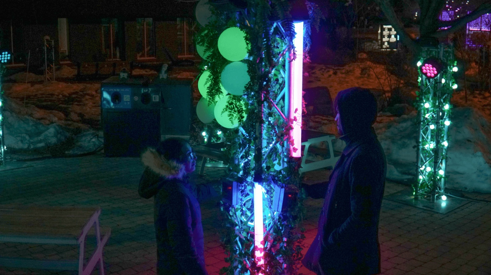
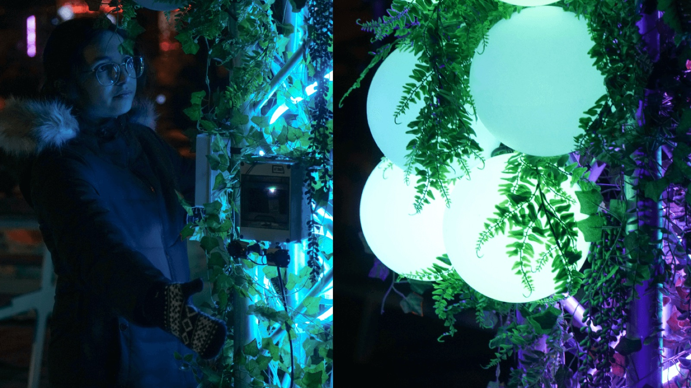
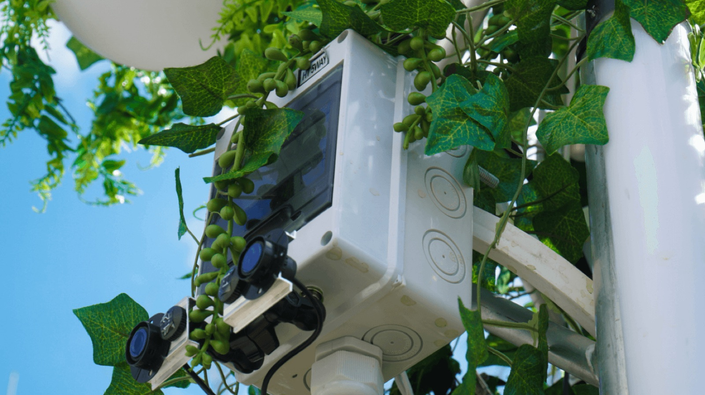
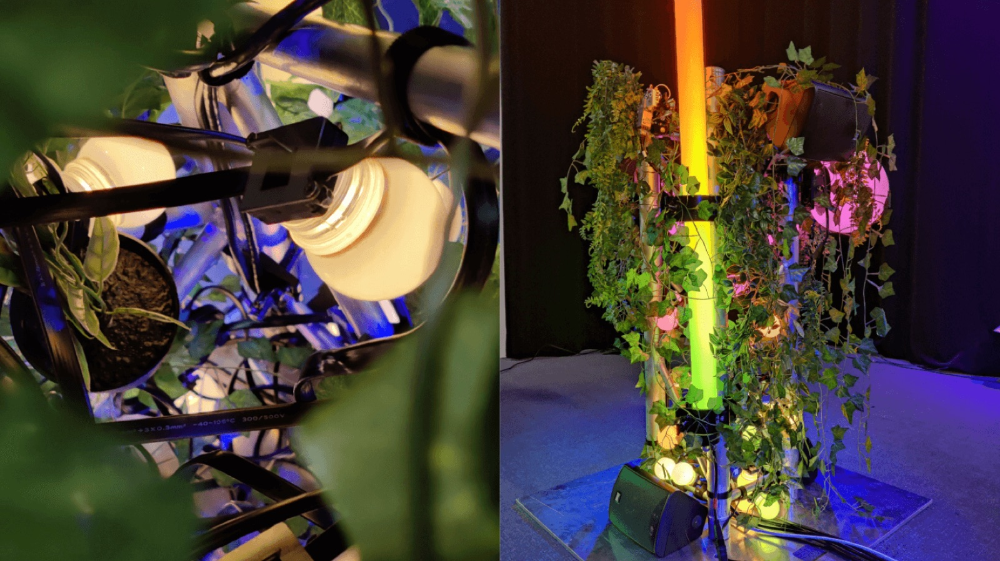
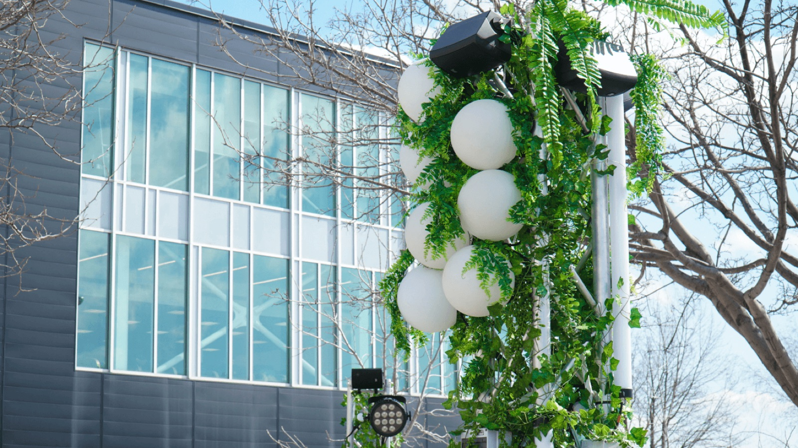

Cliquer pour regarder
Installations interactives
(5/22)
Un monolithe couvert de végétation qui s'éveille quand on s'en approche : une installation sur la dualité entre la technologie et la nature.
Edria évoque l'industrialisation : des structures métalliques et artificielles, recouvertes de fausses plantes, comme le désir de l'humanité de cacher sa destruction derrière la nature. Installée l'hiver sur le parvis du Collège Montmorency, la végétation contraste aussi avec le climat qui l'entoure.
Comme coréalisateur et concepteur sonore, j'ai donné une voix à chacun des trois états de l'œuvre.
(Fonctionnement)
L'installation change selon le nombre de personnes autour d'elle.
Sans spectateur, les lumières sont ternes et bleutées. Côté son, une douce respiration : un monde endormi.

Les capteurs détectent la présence et chaque côté de la tour s'allume avec sa couleur. J'ai conçu cinq courts sons par côté, joués au hasard, et une ambiance plus longue qui reste active tant que quelqu'un est proche : un écosystème sonore vivant et synchronisé.

Quand les quatre côtés sont occupés, une animation lumineuse et musicale d'environ une minute se déclenche. Une composition intense et rythmée, synchronisée avec les lumières, qui symbolise la présence humaine et son impact sur l'environnement.
Des capteurs sur chaque face, des haut-parleurs cachés dans les plantes. Les ambiances ont été créées dans FL Studio, la lumière est pilotée dans MadMapper, et les logiciels se parlent en OSC (UDP).

Images8 photos

